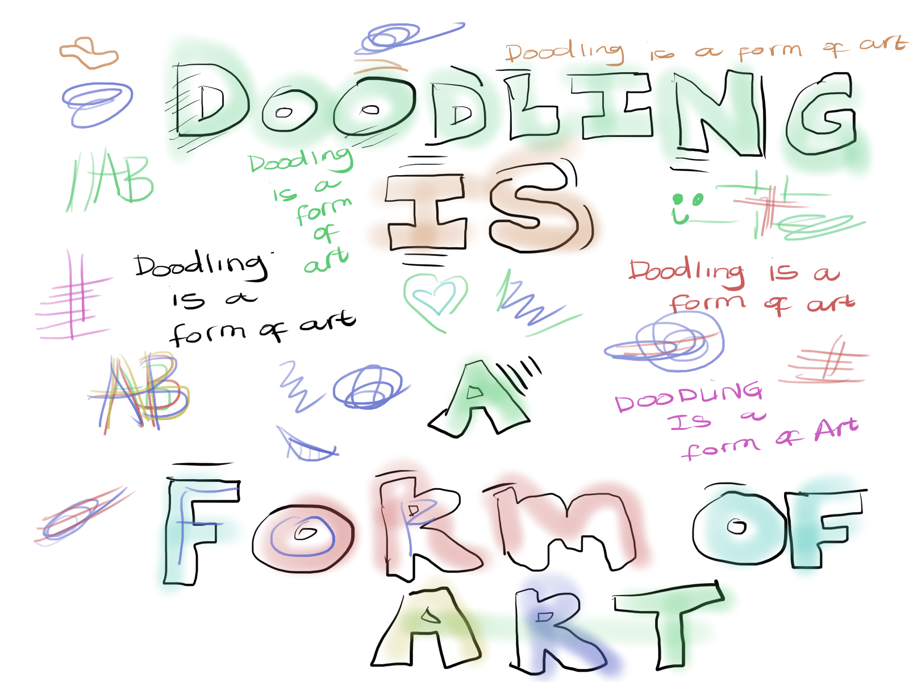
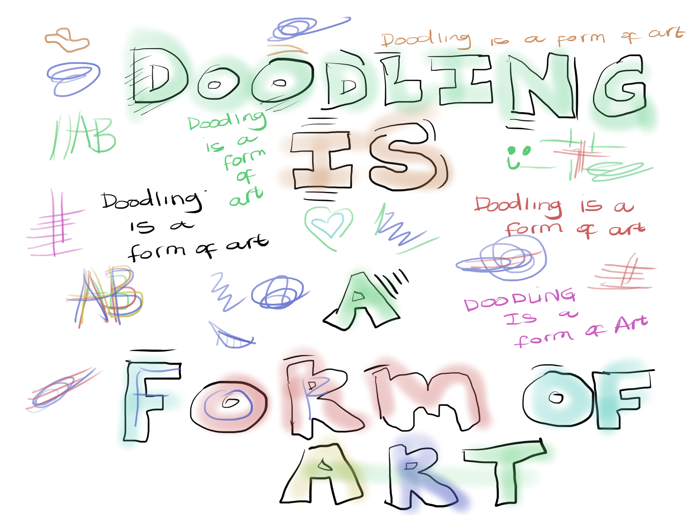

When I was 14 years old my parents would let me do my online homeschool classes alone. At that time, we stayed in India, my parent’s favourite place to travel to. The normal was them leaving early in the morning and returning in the afternoon every single day. While they were out exploring cultural riches of India, documenting experiences for their blog. I would have to stay in the hotel room and attend my classes.
In the room, I always had to take notes while attending online, this is how it all started. With a book and pen in my hands for 2 hours max I could not help myself but doodle on my notebook. As the years progressed, my doodling got excessive. My doodling was not only in my notebooks but my actual exercise books. I was doing it while on the phone ordering a meal, I would do it while listening to music, while waiting for my parents to walk in and show me everything they documented. I was doodling every single day
Doodling relaxed me and somehow will make me anxious. For a very long time, I did not believe how lucky I was to have discovered this, I was a genius. It was so sacred to me that I even kept it away from my parents.
Then came the time that my doodling was so excessive that like how most people need a certain amount of sleep, or need not to keep breakfast otherwise they will be off the whole day? That was doodling for me. I was starting to doodle on my bedroom walls. I needed to stop and I started to see my doodling in a negative light. I thought I had a problem. Like what I normally do when I encounter a problem, I looked up solutions on Google.
On my research I found out about Mr Doodle, a 26 year old London doodler who has become a multi-million dollar auction sensation. At that time Mr Doodle was working with well established brands like Adidas, MTV to name a few.
That is when the idea sparked that I could do that too, I had my own doodle style and once my parents found out about my doodling, my dad said while looking at one of the pages I doodled on “I would buy this, it is so interesting to look at”. With the support of my parents, I was able to sell about 50 doodle pieces that year
 
